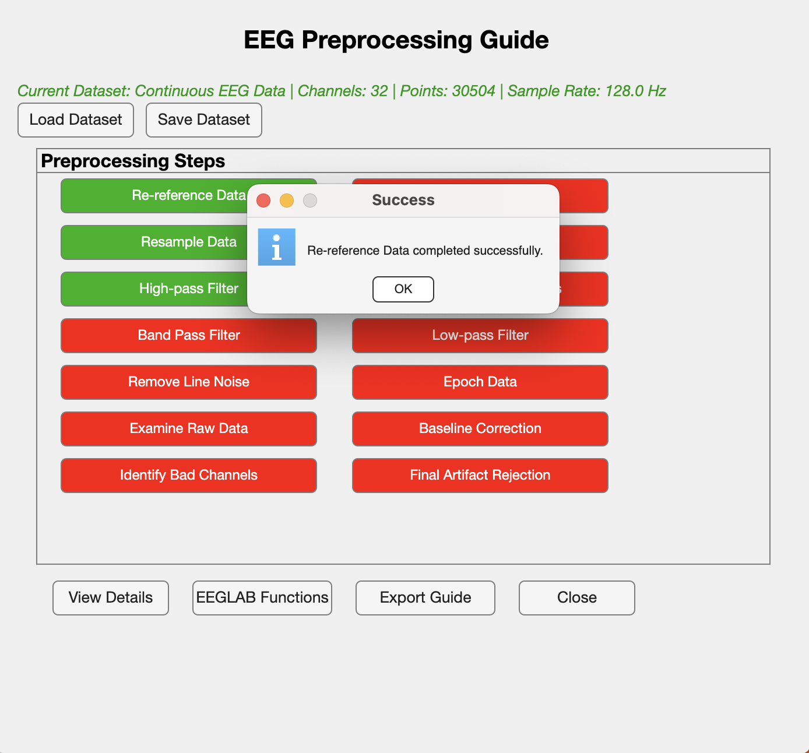
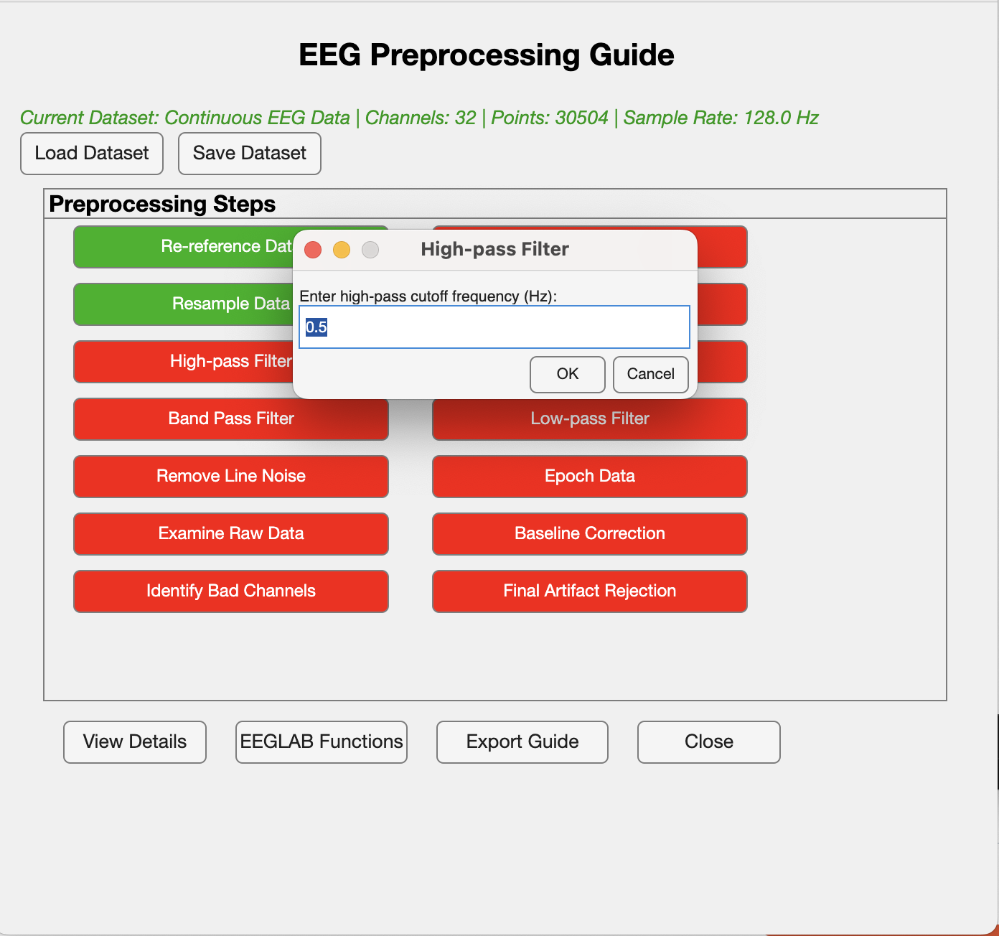
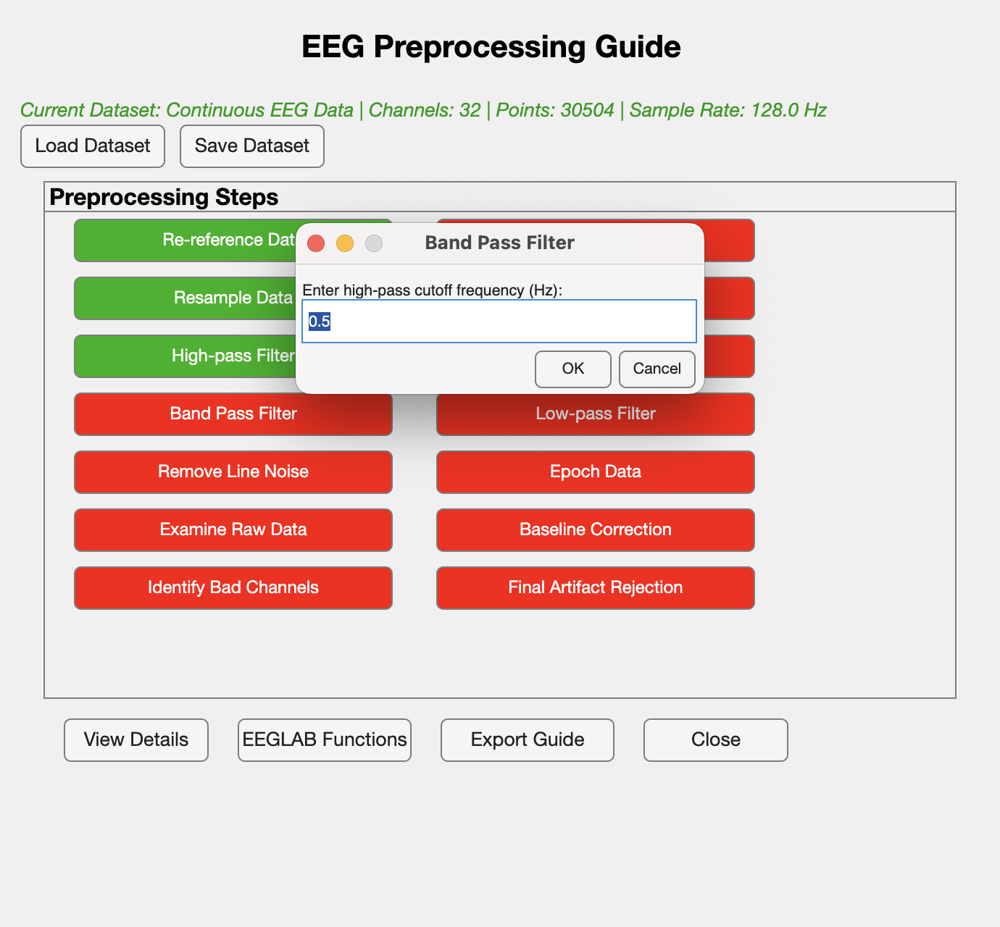
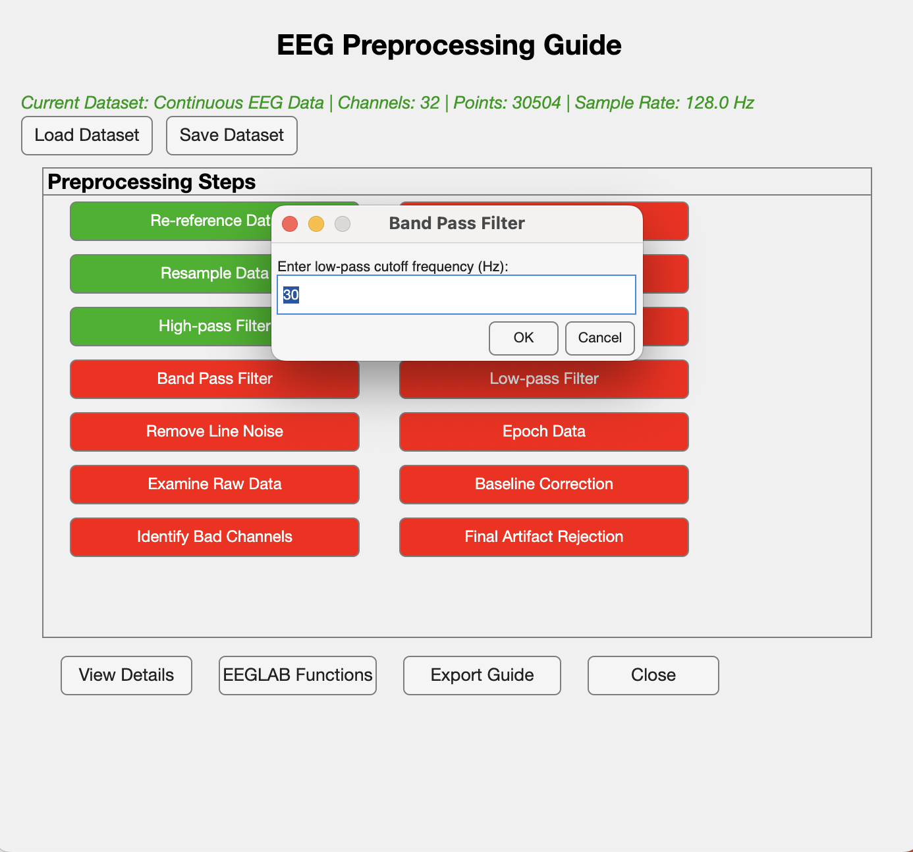

Overview
EEG Data Analysis Toolkit is a desktop application designed to streamline and visualize the preprocessing of EEG (Electroencephalogram) data.
The toolkit features an intuitive graphical user interface (GUI) that guides researchers through a structured 15-step data-cleaning pipeline. Each step is clearly color-coded — red for incomplete and green for completed — ensuring users can easily track progress and follow the correct order of operations.
The goal of this project is to simplify the complex preprocessing stages involved in EEG data analysis, reduce manual errors, and improve workflow efficiency for neuroscience researchers and data analysts.
Features
The 15-Step Preprocessing Pipline
User Guide / Interface Overview
This section provides a walkthrough of the EEG Data Analysis Toolkit interface and its core features.
Landing Page
Upon launching the application, users are greeted with a clean, organized dashboard displaying the entire 15-step pipeline. Each step can be clicked to run that step within EEGLAB with the necessary inputs.
Re-reference Data
Resample Data

High-pass Filter
Band-pass Filter
 Remove Line Noise

Examine Raw Data